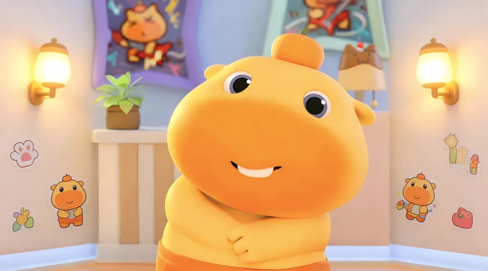

账号通知、普通提醒、汇总邮件会被过滤；像活动但不够稳的内容进入复核，不直接污染日历。
Outlook / Gmail
读取新活动邮件
Calendar
可信事件才写入
常驻模式每轮处理最新 1 封邮件；离线补处理才批量回扫 20 / 50 封，避免把在线轮询做成大批量重扫。
日历事件包含摘要、来源邮件、发件人、收信时间、链接和原始正文。
给用户看的结果
用户只需要把活动邮件送进目标邮箱。服务在服务器常驻运行，不依赖本地电脑一直开着。
活动邮件自动入日历
讲座、工作坊、报名活动、培训、维护通知等邮件会被识别，提取标题、开始时间、结束时间、地点和说明。

不确定就停住
多活动混杂、时间冲突、缺少结束时间、取消或撤回通知，都会进入 needs_review。
标题默认中文化
标题、摘要、地点、复核原因尽量用中文写；英文项目名、机构名、房间名保留。
Hermes 能查能提醒
自托管 Hermes 负责 daily_digest、fault、health_report，也负责 new_event / event_needs_review 的微信 / QQ 提醒、交互式查询和新增确认。
开发者关心的边界
核心脚本使用 Python 标准库实现。外部依赖集中在 Microsoft Graph、Gmail API、OpenAI-compatible Responses API 和系统服务。
读取消息
Outlook 通过 Microsoft Graph 读取 /me/messages 或指定 mailbox；Gmail 通过 Gmail API 读取邮件正文。
事实抽取后再决策
AI 只负责抽取标题、时间、地点等事实，Python 规则再做保守决策；extraction.auto_ignore_keywords 维护 Daily Event Alert、消防演练、发电机负载测试等噪声词。
结构化抽取
Responses API 返回 JSON schema 约束结果，每封邮件先拿到结构化事实，再由本地规则决定 created、needs_review 或 ignored。
写入与审计
eligible 事件写入 Outlook 或 Google Calendar；SQLite 记录去重和处理状态。
event_agent.py
# 常驻在线：每轮只处理最新 1 封
python3 event_agent.py \
--config config.local.json serve --write
# 离线补处理：按需回扫 20 / 50 封
extraction.batch_size = 20
calendar.include_source_email_body = true
# Hermes 查日程 / 确认后建日程
GET /agenda
GET /agenda-range
POST /calendar-events # confirmed: true状态规则保守一点
日历是高信任界面，宁愿少写，也不要把错误事件塞进去。
时间、地点、标题、置信度都足够，且不是重复事件。服务模式下会创建日历项。
测试模式下的可写候选，只展示结果，不真的写入日历。
像活动但缺信息、多活动混杂、信息冲突或取消撤回，暂时只保留日志。
明确不是日程，或者命中特定噪声规则，例如 Daily Event Alert、消防演练、发电机负载测试。
Hermes 联动
本项目暴露受控的本地 HTTP/API 能力，自托管 Hermes 负责把 IM 指令转成安全的查询或确认动作。
推送
服务可以生成 daily_digest、fault、health_report，以及 new_event / event_needs_review 的微信 / QQ 提醒，通过 HERMES_WEBHOOK_URL 发到自托管 route；投递失败会进入健康报告，微信限流可在 Hermes 运行配置里重试或切 QQ fallback 排障。
查询与创建
Hermes 可读取 /agenda、/agenda-range、/digest、/events 和 /health；new_event / event_needs_review 支持交互式查询、确认新增，新增日程必须先确认标题、日期、时间、时区和日历目标。
部署到服务器
当前生产仍以短间隔在线扫描为主，事件驱动 Graph webhook 是下一阶段方向。生产环境不要提交 .env、config.local.json、SQLite 数据库或扫描日志。
Quickstart
cd outlook_event_automation
cp config.example.json config.local.json
cp .env.example .env
python3 event_agent.py --config config.local.json auth-microsoft
python3 event_agent.py --config config.local.json run \
--source outlook --sink none --limit 20 --force
python3 event_agent.py --config config.local.json serve --write